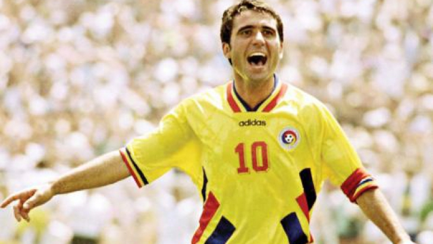
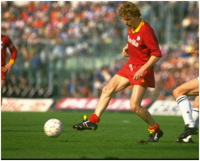
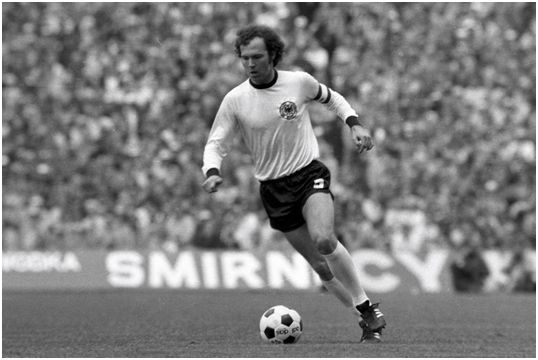
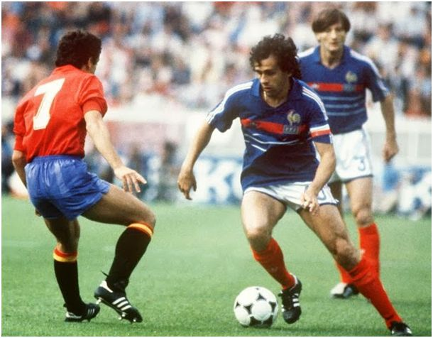
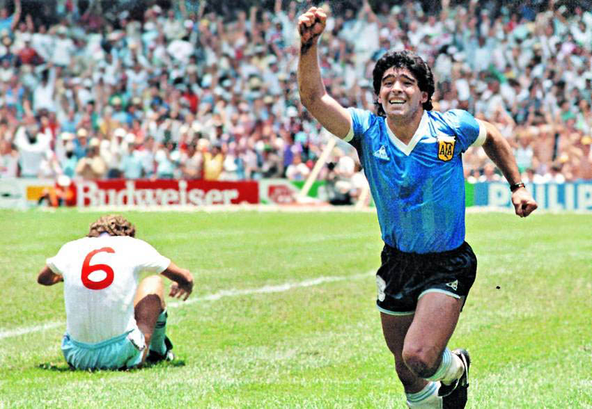
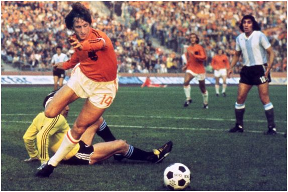

Legendele Fotbalului
Christiano Ronaldo, Zinedine Zidane, Ronaldo, Lionel Messi, Thierry Henry, Ronaldinho, David Beckham-aceştia sunt cei mai profesionişti fotbalişti ai zilelor noastre care fac impresie, ne încânta cu mişcările lor, ne uimesc cu golurile lor. Însă înaintea acestor vedete sportive, a existat o adevărată “generaţie de aur” alcătuită din fotbalişti ce au rămas în analele şi recordurile istoriei sportului.
Gheorghe Hagi(n.1965)
-fotbalist român si antrenor, unul dintre cei mai buni mijlocaşi atacanţi din Europa Estică, binecunoscut că “Regele” sau “Comandante”. A jucat pentru naţionala României în trei campionate mondiale în anii 1990-1998, şi în trei campionate europene în anii 1984, 1996 şi 2000.
- Anii de activitate ca jucător profesionist:1982-2001
- Echipa Naţională:România (125 meciuri, 35 goluri)
- Cluburi:Farul Constanţa, Sportul Studenţesc, Steaua Bucureşti, Real Madrid, Brescia, Barcelona, Galatasaray
Hagi Best Goals || Amazing Moments
Zbigniew Kazimierz Bonie (n.1956)
-fotbalist polonez si antrenor, mijlocaş, jucător la Juventus cu care a câştigat Cupa Europeană în 1985
- Anii de activitate ca jucător profesionist:1973-1988
- Echipa naţională:Polonia (80 meciuri, 24 goluri)
- Cluburi:Zawisza Bydogoszcz, Widzew Lodz, Juventus, Roma
Zbigniew Boniek, Bello di notte [Best Goals]
Franz Anton Beckenbauer(n. 1945)
-cunoscut ca “Der Kaiser”-mijlocaş, fotbalist german şi actual antrenor, inventator al poziţiei “libero”. A fost un jucător versatil, cu un stil elegant, dominant şi lider înnăscut. A jucat pentru echipa Germaniei de Vest în trei campionate mondiale şi în echipa Bayern Munchen. În 1967 a câştigat cupa campionilor UEFA, în 1972 a câştigat Campionatul European şi alte trei cupe europene consecutive în anii 1974-1976 din poziţia de căpitan
- Anii de activitate ca jucător profesionist:1964-1983
- Echipa Nationala:Germania de Vest (103 meciuri, 14 goluri)
- Cluburi:Bayern Munchen, New York Cosmos, Hamburger SV
Franz BECKENBAUER | FIFA Classic Player
Michel François Platini(n.1955)
-cunoscut şi ca “ Le Roi”-fotbalist francez (italian de origine), mijlocaş, golgheter, acum antrenor, recunoscut pentru abilităţile sale de lider înnăscut, a jucat în echipa naţională a Franţei care în 1984 a obţinut victoria în campionatul european şi echipe din liga franceză A:Nancy, Juventus şi Saint-Ettiene. A câştigat trei premii consecutive în anii 1983-1985.
- Anii de activitate ca jucător profesionist:1972-1982
- Echipa Nationala:Franta (72 meciuri, 41 goluri), Kuweit
- Cluburi:Nancy, Saint-Etienne, Juventus
Michel Platini Best Goals & Amazing HD
Diego Armando Maradona(n.1960)
-fotbalist argentinian ce a jucat la echipa naţională a Argentinei. A jucat la Argentinos Juniors, Boca Juniors, F.C. Barcelona, S.S.C. Napoli, F.C. Sevilla, Newell’s Old Boys. În cele 91 de meciuri ale sale în cadrul echipei Argentinei a marcat 34 de goluri şi a participat la 4 turnee finale ale Campionatului Mondial. . Într-un meci din sferturile de finală cu Anglia, a marcat un gol cu mâna (în presă, acest fapt a fost denumit de către jucător ca “mâna lui Dumnezeu”). Cel de-al doilea gol, marcat după o cursă de 60 m în care a driblat 6 jucători englezi, a fost numit golul secolului. În 1986, Argentina, cu el căpitan, a obţinut Cupa Mondială după ce a învins echipa Germaniei de Vest, câştigând Balonul de Aur. A fost transferat la Barcelona pe suma de 5 milioane de lire. Avea o vedere excelenţă, ştia să paseze, avea un control deplin asupra mingii, avea abilităţi bune de driblare, viteză accelerată, reflexe.
5 Times Diego Maradona Shocked The World!
Hendrik Johannes Johan Cruijff(n.1947-m.2016)
-fotbalist olandez, recunoscut pentru că a obţinut Balonul de Aur de trei ori în anii 1971-1974. A expus filosofia de fotbal cunoscută ca “Total Football”. A condus echipa naţională a Olandei în finala Campionatului Mondial în 1974, pierzând în faţa Germaniei. A jucat la Ajax Amsterdam unde a obţinut 8 titluri “Eredivisie”, 3 cupe europene şi una intercontinentală. În 1973 s-a transferat la Barcelona care a ajutat-o să obţină victoria în cadrul “ La Liga”.
- Anii de activitate ca jucător profesionist:1964-1984
- Echipa Nationala:Olanda (48 meciuri, 33 goluri)
- Cluburi:Ajax, Barcelona, Los Angeles Aztecs, Washington Diplomats, Feyenoord.